Herramienta fundamental con la que podemos acceder y organizar los dispositivos, carpetas y documentos del equipo. Ejemplos:
Copiar fotos de la memoria de la cámara a una carpeta del escritorio.
Organizar nuestros documentos de trabajos de la universidad en una carpeta.
Mover a la papelera un video que ya hemos visto.
¿Cómo se accede al explorador?
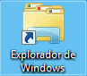
Hay varias zonas desde la que podemos acceder al explorador de archivos.
Equipo.
Icono del explorador.
Papelera de reciclaje.
Menú inicio > Todos los programas > Accesorios > Explorador.
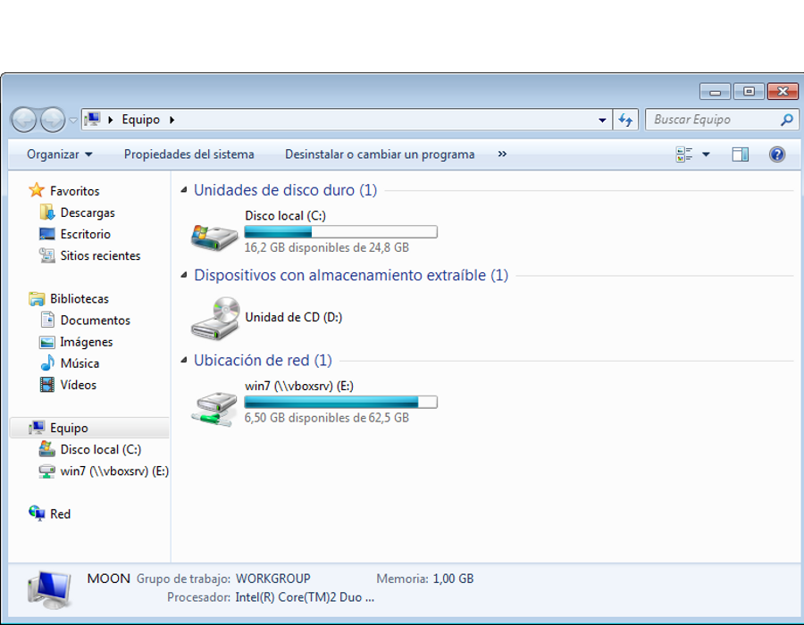
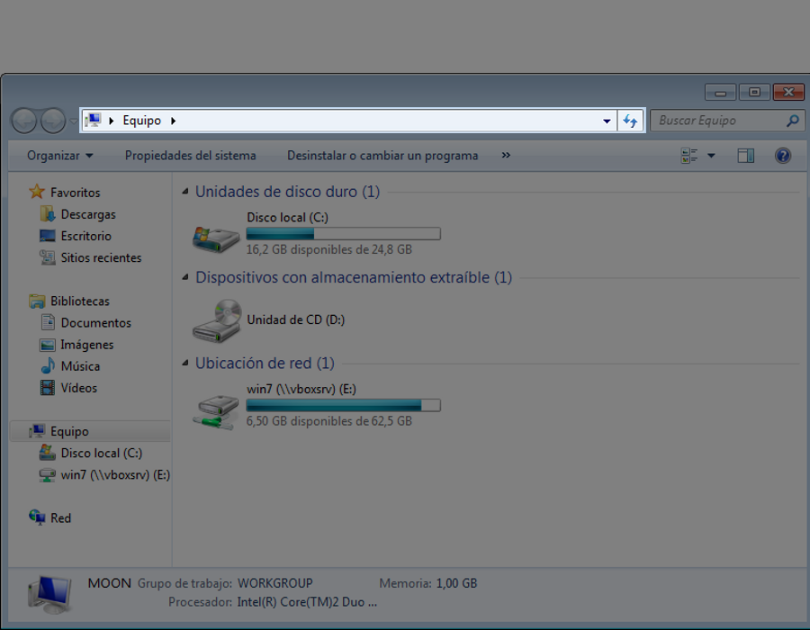
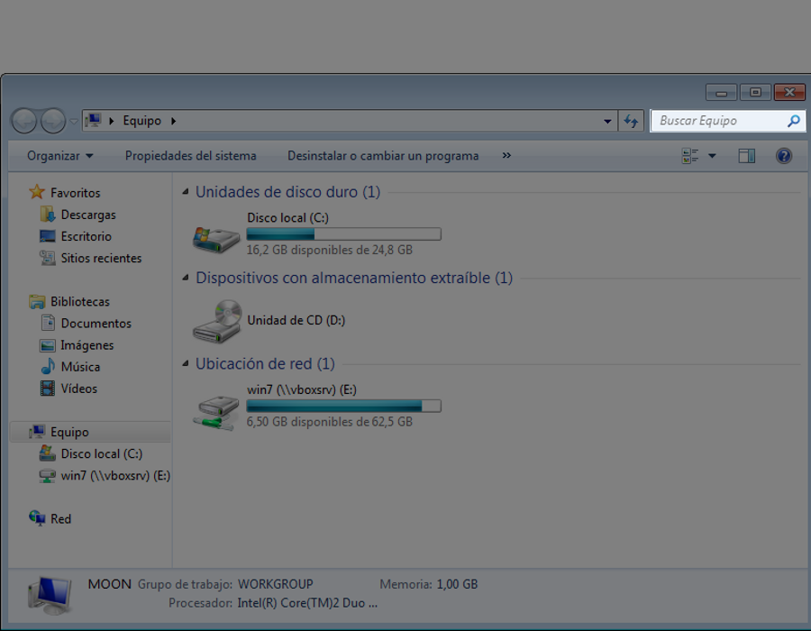
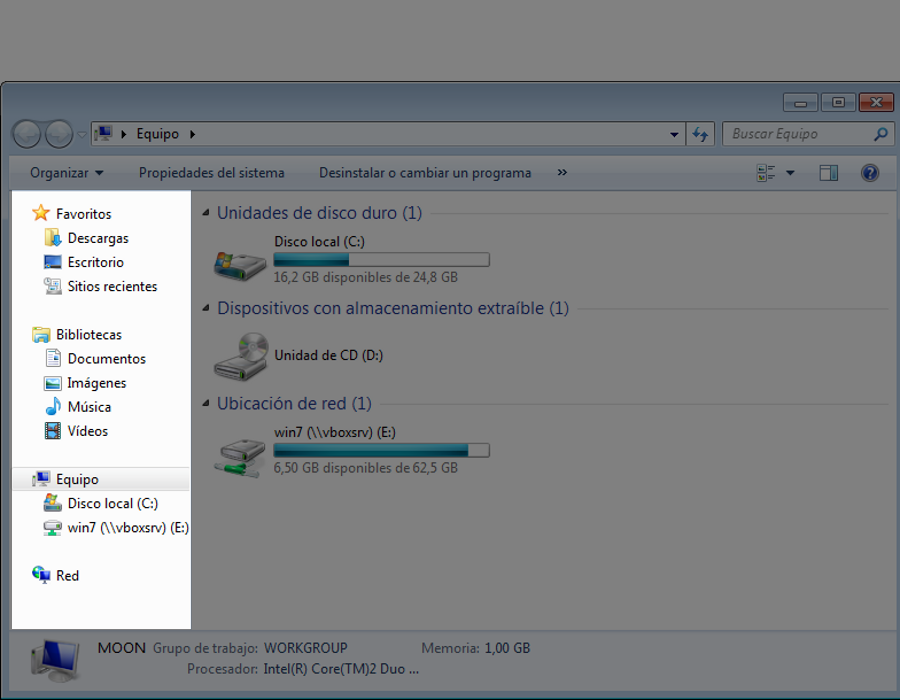
Cambia de foto con las teclas: ↑ y ↓
Dispositivos
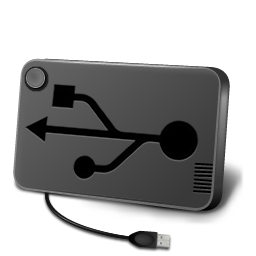
Al ordenador podemos conectar varios dispositivos que pueden albergar documentos.
Disco duro Todo ordenador tiene uno o varios discos duros.
CD-ROM. Dispositivo óptico de capacidad fija.
Lápices USB o memorias. Dispositivo de almacenamiento de diferentes velocidades y capacidades.
Carpetas y documentos
Repasemos un poco la organización de los archivos en un ordenador.
Estructura jerárquica de almacenamiento.
Dispositivos. Son la unidad lógica que se corresponde con algo físico (un disco, una memoria).
Carpetas. Contenedores de otros elementos.
Documentos. La información en si.
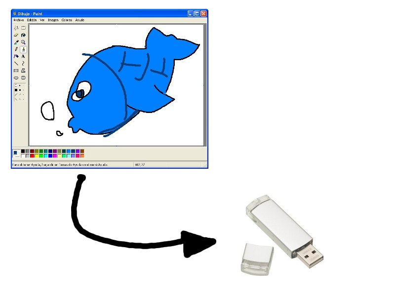
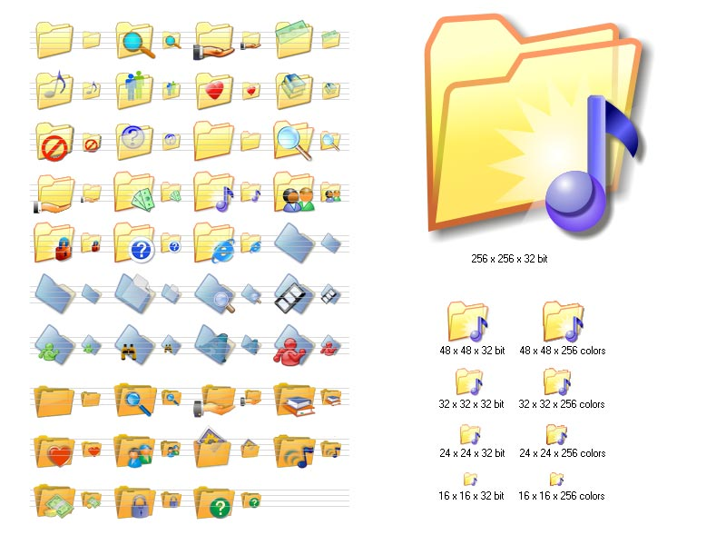
Cambia de foto con las teclas: ↑ y ↓
Navegar con el explorador
Navegar por las carpetas es muy característico en el explorador de archivos, y se corresponde con la navegación de archivos en otros sistemas operativos.
Identificación de carpetas. Deberemos saber qué iconos representan carpetas, ya que dentro de ellas habrán más archivos.
Abrir un documento. Doble click sobre el icono del archivo.
Abrir una carpeta. Doble click sobre el icono de la carpeta.
Abrir el explorador
Explorar archivos
Operaciones con el explorador
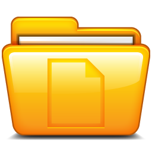
Desde el explorador podemos realizar 4 funciones básicas.
Abrir documento. Abrir un documento con el programa asociado.
Copiar una carpeta/documento a otra ubicación.
Mover una carpeta/documento a otra ubicación.
Eliminar una carpeta/documento. Es decir, mover a la papelera.
Mover archivo a carpeta
Operaciones con el menú contextual
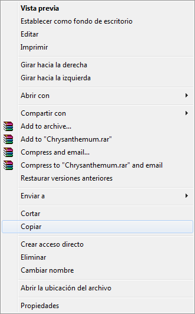
El menú contextual aparece con el botón derecho del ratón, y nos permite realizar todo tipo de funciones sobre un archivo, dependiendo del tipo que sea.
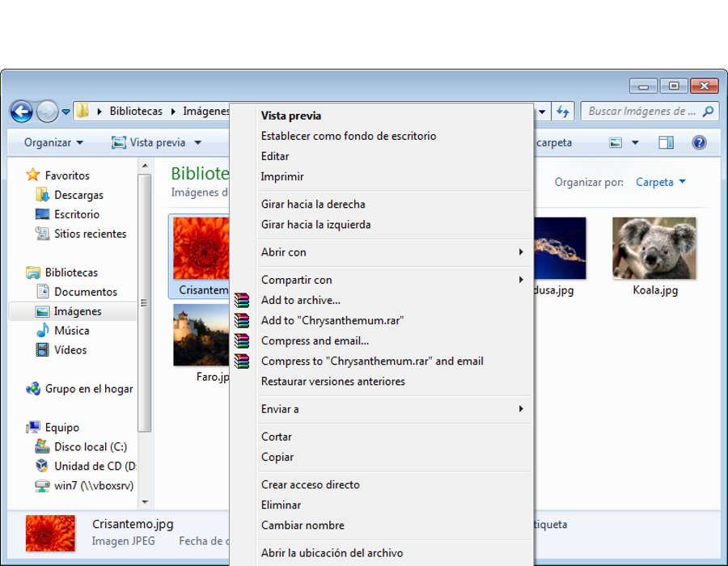
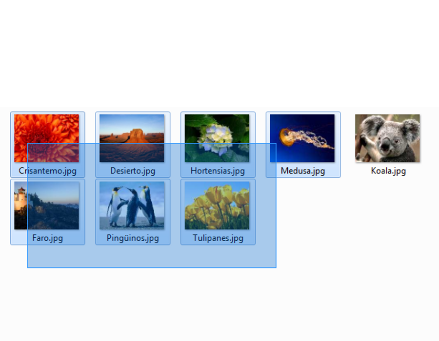
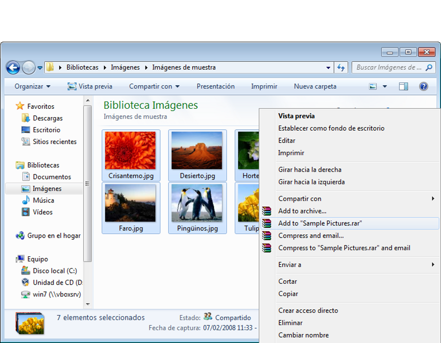
Cambia de foto con las teclas: ↑ y ↓
Papelera
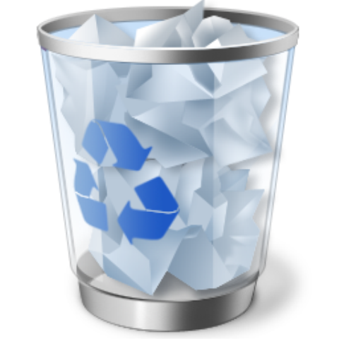
Veamos las características de la carpeta especial Papelera.
Es una carpeta más del sistema.
Todo lo que borremos va a parar a esa carpeta.
Al vaciarla, la información se pierde. Para vaciarla debemos pulsar el botón derecho del ratón sobre el icono de la papelera y seleccionar la opción correspondiente.
Mover a la papelera
Vaciar papelera
Unidades de red
Finalmente aunque no lo podemos practicar, comentemos las Unidades de red.
Carpetas remotas. Podemos acceder a carpetas de otros equipos de la red local desde nuestro explorador, si las han compartido.
Utilizamos la red como medio de transporte.
Mis sitios de red. Si alguien comparte una carpeta y nos da permisos para accederla, la visualizaremos en la zona de Mis sitios de red.


 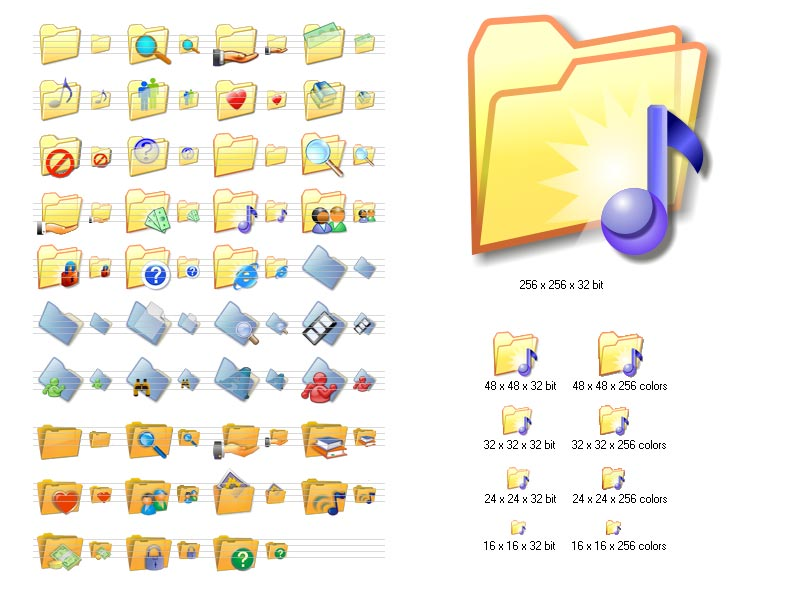
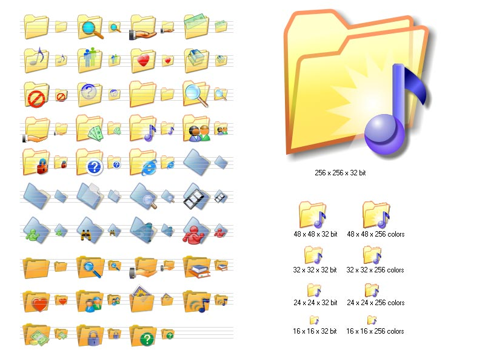